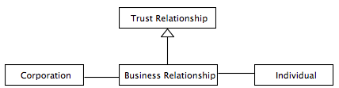
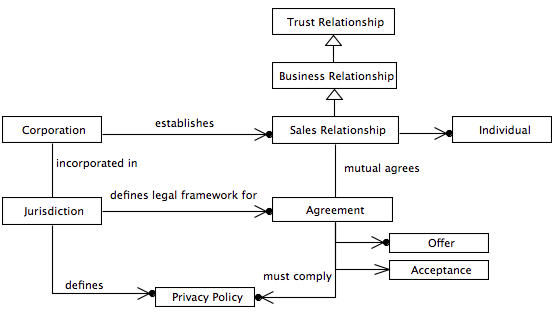

Personal Data API Part 2
personalData apiPosted on Jan 25
In this blog entry I will drill down in the topic of relationships between Individuals and Corporations in context of Personal Data . The Relationship in which personal data is used - or you could also call it the context - plays a pivotal role which will be reflected in ultimately in the data API. So let's get started on some core concepts and its definitions.
Introduction
Refer to my earlier blog entry which discusses topic in context of Personal Data
http://cloudburo.github.io/blog/2012/10/21/user-customer-partner/ discusses the concept of user, customer, partner in context of a bank, by establishing a banking relationship with a legal entity. This is actually a refinement of the topic.
http://cloudburo.github.io/blog/2013/05/09/personal-data-api-part-1/ introduces the Information Halo and provides information about personal data, data protection act, as well as banking secrecy.
For completeness I repeat the definition made in one of the above post.
Personal Data is anything which identifies you as an individual, either on its own or by reference to other information. It can include expressions of opinion about you.
Personal Data in isolation is not very interesting. Personal Data must be always see in in context of Associations or Relationships. So lets go back in the life of an individual when one of the first personal data association will be created, actually often just some minutes after the birth:

A first personal data identifier a person may will come into contact with is the hospital baby bracelets, which will immediately associates personal data of you in context of your first visit on the new world outside the mothers belly. The bracelet will be a personal identifier with your name, weight and other information and as of today frequently extended with bar codes which will link you directly in the hospital information system. Depending on the hospital technology affinity the information system will start collecting quite an amount of data about you. Refer to the following case study, which is describes the location data collection of the babies:
The new bracelet is roughly the size of a stack of about 5-6 quarters on a 1/2″ wide plastic bracelet. By transmitting a radio signal to sensors throughout the maternity ward, the hospital is able to track the baby's location. When contact between the bracelet and receivers in each room and hallway is lost, all exit doors are slammed shut and the elevators are disabled. Link
So the personal data is now associated already with a company via a unique identifier. The importance of unique identifier will be discussed at a later stage.
But what kind of Relationship exists between the individual and a corporation ?
Let's analyze the relationships in some more details which are playing an important role in a personal data constellations.
In the above use case the collecting of personal data took place due to the fact that there exists a Business Relationship between the two parties (hospital and parents of the baby). I.e. there is an Agreement between the two parties about getting birth Services.
So what is the underlying prerequisite which brings two parties together into a Business Relationship ?
A main driver for entering into such a relationship is Trust, without trust you will certainly not sign an agreement and put your child's future into their hands. That will be true for any kind of Business Relationship, i.e. in any such relationship you will agree as an individual for getting some products or service s from a corporation you normally will pay money for. So the core association of personal data is a Trust Relationship.
Trust plays a pivotal role in context of Personal Data, if we trust somebody we will be willing to share our data.
As nicely stated by Emily Aiken in of her blogs:
... I read in several places that data is the new oil. I see it differently. I think TRUST– not Big Data – is becoming the ultimate commodity. Trust, Not Data, is the New Oil

Various activities are ongoing which are discussing the growing need for an international agreement regarding how data is collected, store, used and verified. This ends in the proposition that a "Constitution of Information" has to be created.
As stated in Respect Trust Framework: A new Constitution
Such a Constitution would bind not only State actors, but all signing organizations who are entrusted with other people’s data
The article will also point you to the first of such a Constitution of Information made public in May 2011 at the Open Identity Exchange. Definitely a worthwhile read.
Let's go back to our contract discussion.
Integral part of the contract is the Privacy Policy that discloses some or all of the ways a party ( in our sample the corporation) gathers, uses, discloses and manages a customer or client's data.
The exact contents of a privacy policy will depend upon the applicable law and may need to address requirements across geographical boundaries and legal jurisdictions. Most countries have their own legislation and guidelines of who is covered, what information can be collected, and what it can be used for.
The important concept here is the Jurisdiction
A jurisdiction is area with a set of laws under the control of a system of courts or government entity which are different to neighboring areas. WikiLink
So the Jurisdiction has the authority to decide cases, for example a litigation case in context of the agreement brought up by one of the two above parties, which includes any break in context of the privacy policy.
The below diagram outlines the major concepts as describe and how they are associated as seen from a Corporation point of view. We additionally introduced the Sales Relationship to be more precise.
A Sales Relationship is created, when there is an Agreement signed between a Company and Party in order to purchase some Services, Goods or Financial Assets.

It's key to understand that a Sales Relationship is tied to an Agreement which includes legal obligation for the Parties (the provider of for example services, as well as its consumer) signed it.
It's pivotal for a personal data api that the contractual agreement around the privacy policy of the customers ( what he has consented of his data and what not) is available in a machine readable in order to do correct data access checks.
In the next entry I will switch the side and look at the relationship topic from a corporation point of view.
©2015 dev@cloudburo
Powered by Cloudburo Curation Engine
Categories
- futureWork (5)
- shift (4)
- personalData (2)
- api (2)
- startup (1)
- microservice (5)
- architecture (4)
- modeling (1)
- banking (1)
- inspiration (2)